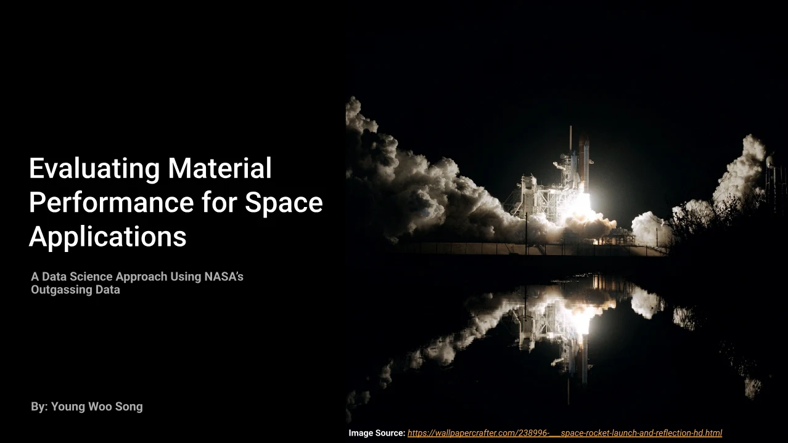

Feature engineering
Engineered chemical / physical descriptors from raw material data.
ML for space-grade materials
Machine-learning models for NASA outgassing metrics — TML (Total Mass Loss), CVCM (Collected Volatile Condensable Materials), and WVR (Water Vapour Regained). The goal: predict whether a material will pass space-grade thresholds before physical testing.
Outgassing tests are expensive and slow. A reliable predictive model accelerates material selection for satellites and spacecraft.
Engineered chemical / physical descriptors from raw material data.
Regression on the three metrics; classification on pass/fail thresholds.
Reported error bars and confusion matrices honestly.
NASA outgassing CSV; 'ID' column set as index.
Two passes — quantile-based filtering, then IQR method on TML/CVCM/WVR/Space Code.
Drop columns/rows with significant gaps (Cure, Material Usage, Space Code); dedupe.
Supplier performance score from TML + CVCM + WVR; noise added to simulate realistic scenarios.
Regression (Linear, Random Forest) for performance; classification (Logistic, RF, SVM) for reliability.
Linear Regression chosen for regression; Logistic Regression for classification.
Quantile and IQR outlier filtering with missing-value and duplicate handling.
Supplier performance scores from TML, CVCM, and WVR, with noise added to simulate realistic scenarios.
Linear Regression and a Random Forest Regressor predict material performance.
Logistic Regression, Random Forest, and SVM assess procurement reliability.
Linear Regression selected for regression, Logistic Regression for classification.
| Task | Models | Selected |
|---|---|---|
| Regression | Linear Regression, Random Forest Regressor | Linear Regression ("based on evaluation scores") |
| Classification | Logistic Regression, Random Forest Classifier, SVM | Logistic Regression |
Explore the material
behind the project.
Presentations, research, and supporting material from the project repository, alongside the original project media.
Browse the published slides, including the research approach and findings.

39 cells · 4 saved charts. Read the analysis, code, and recorded results.
63 cells · 17 saved charts. Read the analysis, code, and recorded results.
50 cells · 4 saved charts. Read the analysis, code, and recorded results.
6 cells · 0 saved charts. Read the analysis, code, and recorded results.
Read the project overview, setup notes, and technical documentation.
Have an idea, a challenge, or a different perspective?
I’d love to hear it.